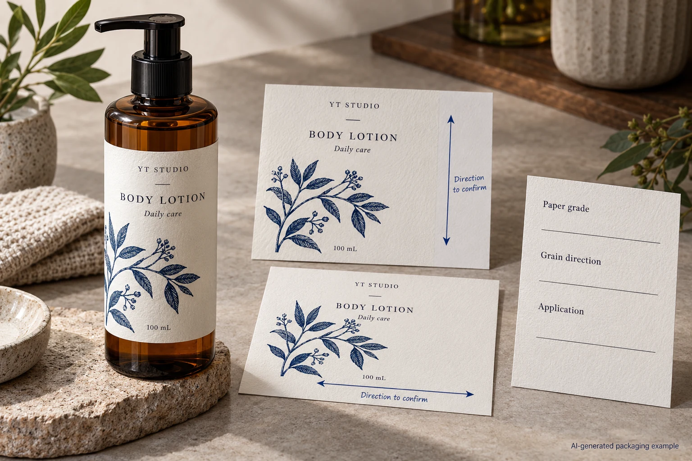
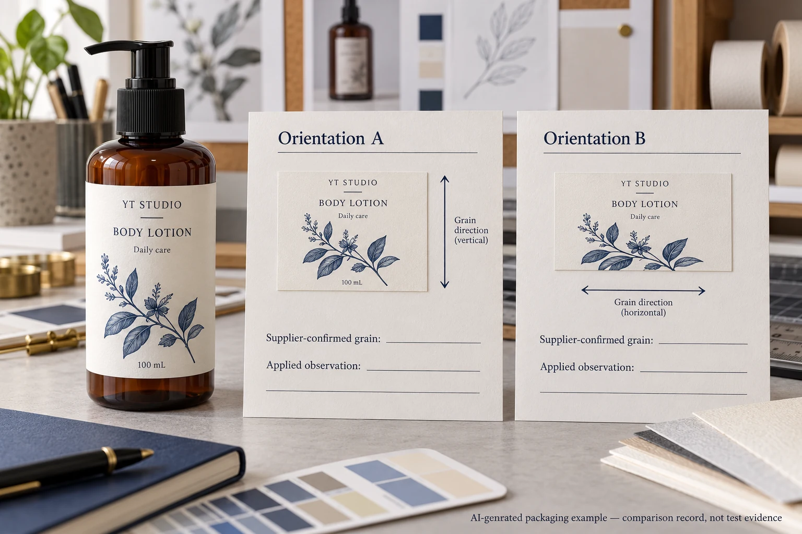

Two paper swatches have the same product name and nominal weight. One is cut in a different direction. When they are wrapped around a jar, the comparison may include a directional change as well as the apparent material choice.
Before drawing a conclusion, ask the converter to identify the paper's grain direction and show its relationship to the label and bend. Compare representative constructions with those references recorded. Grain is one variable to investigate; a hand-bent paper strip cannot diagnose every lifting edge or establish bottle adhesion.

Name the direction on the actual label
Grain describes the predominant fibre direction associated with paper manufacture. Avery Dennison's pressure-sensitive glossary defines it for paper face stock, while Holmen's technical information distinguishes machine direction and cross direction. These terms belong to the paper, not automatically to the product name's reading direction.
Ask the supplier to mark the direction on the relevant drawing or identified swatch. Relate it to the label width and height, the proposed wrap around the container and the supplied web or sheet. A statement such as grain long is incomplete if nobody knows which finished rectangle it describes.
Also separate grain from roll unwind. The roll specification guide describes the leading artwork edge, core and delivery arrangement. A roll can have an agreed unwind direction while the buyer still lacks a clear reference for the paper face's directional orientation.
Keep the face paper separate from the whole construction
The label also has adhesive, print, finish and a backing before application. Ask which layer a directional property describes. The face paper's behaviour does not by itself predict the supplied label assembly or its performance after the liner has been removed.
For a jar wrap, define the intended bending direction and the actual usable panel. For a lid label placed on a broad flat area, the main decision may be different. A sheet fed through a printer introduces another orientation relationship again. Ask the relevant converter or operator what matters for the actual task rather than transferring a rule from another paper application.
Nissha Metallizing explains that paper grain can affect directional properties such as bending, tear and moisture-related dimensional change in packaging and label applications. That supports asking for an identified orientation. It does not supply a universal direction that makes every cosmetic label stick or feed correctly.
Compare samples without changing several things silently
If the supplier proposes a different orientation, retain the same bottle, label geometry and intended construction where the agreed comparison permits. Identify any change to adhesive, finish, paper or preparation. Otherwise the result cannot reasonably be attributed to direction alone.
Use a paper model to discuss shape and bend, with its limited scope stated. For final construction questions, request representative finished samples under the supplier's recommended preparation and the site's accepted review procedure. Record the actual applied pack and observation conditions.
Do not use an improvised tear or wetting exercise on the only approved specimen and declare that it proves the production grain. Ask the material supplier or converter for the reference and an appropriate confirmation method. A destructive desk demonstration can remove useful evidence without answering the purchasing question.
Build an orientation record that another reviewer can follow
| Input | Record on the sample or drawing | Decision supported |
|---|---|---|
| Material identity | Face-paper reference and complete construction | Whether the compared samples are equivalent apart from the intended variable |
| Direction | Supplier-identified grain or MD/CD reference | Which way the paper is oriented |
| Finished shape | Width, height and named top/front | How the direction relates to the ordered label |
| Applied bend | Actual container, panel and wrap direction | Which bending task the sample represents |
| Delivery and operation | Sheet/web arrangement and relevant printer or application route | Whether another orientation-sensitive task needs review |
| Observation | Sample ID, preparation, stage and specific feature | What was actually seen and what remains unproved |
| Release | Accepted arrangement, limitations and owner | Which orientation the order must preserve |

Complete identity and direction first. Mark the sample and drawing consistently. Have the responsible parties conduct the agreed comparison, then record a specific observation such as an edge position or handling difference rather than simply writing better paper.
If the direction is unknown, obtain the missing reference. If several construction elements changed, ask whether the comparison needs to be repeated with controlled inputs. If an applied label lifts, preserve the sample and investigate the relevant interfaces; do not attribute the event to grain solely because the label is paper.
Stop the affected release when the supplier proposal and the accepted drawing describe different orientations, or when the only sample does not represent the proposed construction. A quote can retain that open question while the technical review proceeds.
Know when the directional review earns its effort
A hypothetical flat lid label on an established construction may have no unresolved direction-sensitive issue. Its team can confirm the current material and supplied format without inventing an extra comparison. Another project introduces a paper wrap around a tighter jar or a different feeding arrangement. It has a clearer reason to record orientation and obtain a relevant sample.
Neither example says every paper must bend in one preferred direction. The point is to ask which relationship the proposed sample represents and whether the actual process has accepted it. The caliper and basis-weight guide addresses separate material quantities; matching those numbers does not establish directional equivalence.
For cosmetic label production, send the container, label dimensions, quantities, artwork and complete paper construction reference. Mark the intended bend and any known supplier grain information. Include the sheet or roll requirements and the specific observation prompting the review.
Use the inquiry form to prepare the message. Send drawings and sample references separately by email or WhatsApp; the form does not upload attachments. Ask for an orientation the converter can identify and the receiving operation can evaluate.
Sources: Avery Dennison pressure-sensitive glossary, Holmen technical information and Nissha on grain in packaging and labels. Their material contexts inform terminology and the comparison question; no cartonboard setting is prescribed for a pressure-sensitive label.